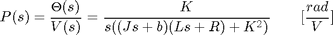
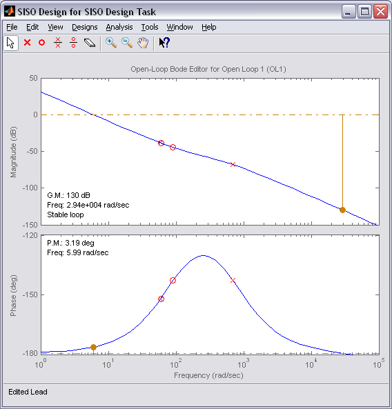
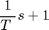
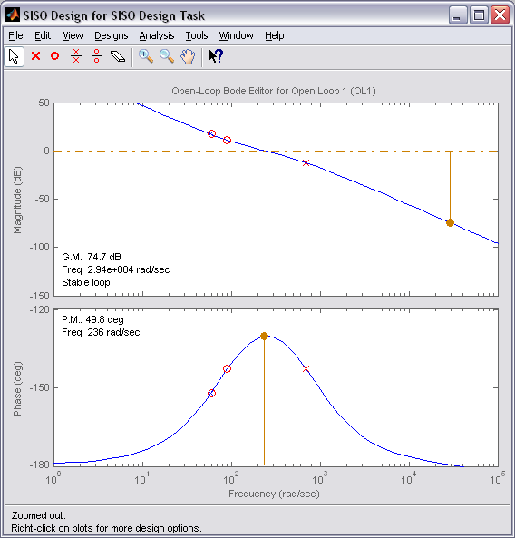
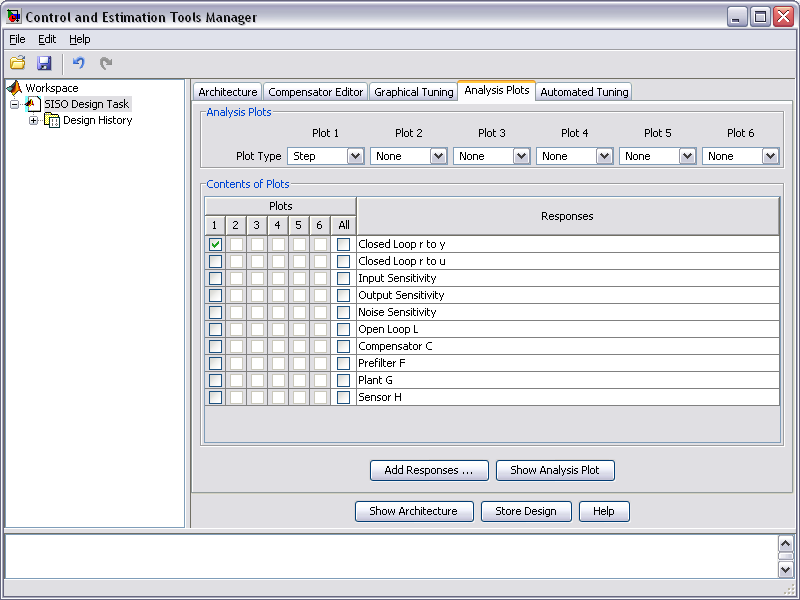
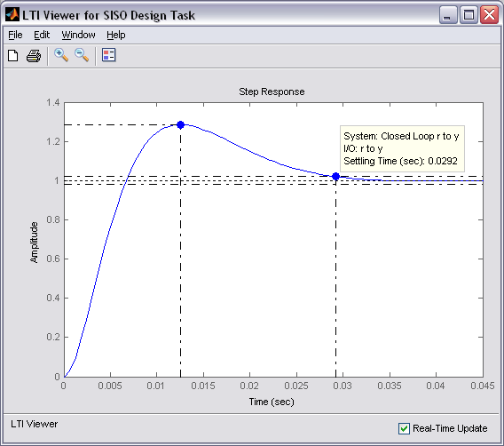
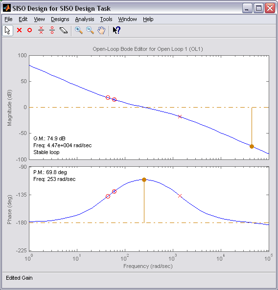
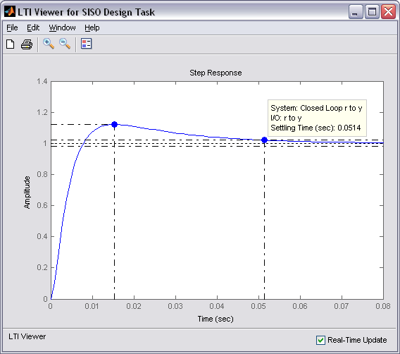
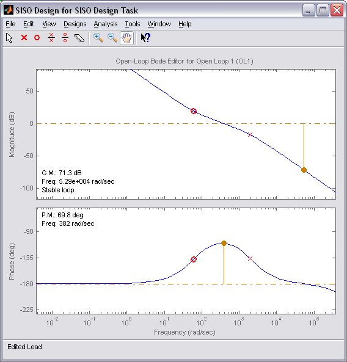
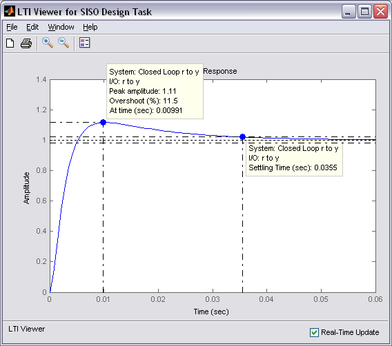

DC Motor Position: Frequency Domain Methods for Controller Design
Key MATLAB commands used in this tutorial are: tf , sisotool
Contents
From the main problem, the open-loop transfer function of the DC Motor is given as follows.
(1)
The structure of the control system has the form shown in the figure below.

For the original problem setup and the derivation of the above equations, please refer to the DC Motor Position: System Modeling page.
With a 1-radian step reference, the design criteria are the following.
- Settling time less than 0.040 seconds
- Overshoot less than 16%
- No steady-state error, even in the presence of a step disturbance input
First create a new m-file and type in the following commands (refer to main problem for the details of getting these commands).
J = 3.2284E-6;
b = 3.5077E-6;
K = 0.0274;
R = 4;
L = 2.75E-6;
s = tf('s');
P_motor = K/(s*((J*s+b)*(L*s+R)+K^2));
Drawing the uncompensated system's Bode plot
The main idea of frequency-based design is to use the Bode plot of the open-loop transfer function to estimate the system's closed-loop response. Adding a controller to the system changes the open-loop Bode plot, thereby changing the closed-loop response. Let's first draw the Bode plot for the original open-loop transfer function. Throughout this section, we will use the interactive SISO Design Tool to design our controller. This tool can be opened for the uncompensated plant by adding the command sisotool('bode',P_motor) to your m-file.
Two windows will open initially with the SISO Design for SISO Design Task window having the form shown in the figure below. This figure shows the open-loop Bode plot of the transfer function passed via the sisotool function. This figure appears initially due to the addition of the string 'bode' to the function call. If the string 'bode' is omitted, the default initial window includes the root locus plot in addition to the open-loop Bode plot.

From previous pages we know that the open-loop plant in unity feedback does not satisfy the given system requirements. We will, therefore, add different compensators to our system in order to reshape the open-loop Bode plot to give the desired closed-loop performance.
Adding an integrator
Now let's add a pure integrator compensator to our system. The architecture of the feedback system can be modified within the SISO Design Tool GUI, but the default compensator C is placed in series with the plant G in the forward path of the block diagram. This corresponds to the architecture we are assuming, as shown in the schematic at the top of this page. Placing an integral compensator in this position will achieve the goal of zero steady-state error in the presence of a step disturbance input.
The form of our controller is then modified under the Compensator Editor tab of the Control and Estimation Tools Manager window. Specifically, an integrator is added to our controller by right-clicking in the Dynamics section of the window and selecting Add Pole/Zero > Integrator from the resulting menu. The figure below illustrates what the Control and Estimation Tools Manager window should look like.

The Bode plot that is already open should then change as shown below to reflect the addition of the integrator.

Gain and phase margin specifications and controller design
Recall that we additionally desire an overshoot of less than 16%. Overshoot of a step response correlates to a system's phase margin. We will apply the relationship that phase margin approximately equals 100 times the damping ratio (zeta) to estimate the desired phase margin of our system. We will additionally use our 0.040 second settling time requirement to estimate the desired bandwidth frequency (Wbw) of our closed-loop system. Add the following code to your m-file to estimate the desired phase margin and bandwidth. Note that these relationships are intended for a second-order canonical system, which we do not have, but the results will serve as a good starting point for our design.
zeta = -log(.16) / sqrt( pi^2 + (log(.16))^2 ); PM = 100*zeta Wbw = (4/(0.04*zeta))*sqrt((1 - 2*zeta^2) + sqrt(4*zeta^4 - 4*zeta^2+2))
PM = 50.3868 Wbw = 251.5743
The above results demonstrate that we desire to have at least 50 degrees of phase margin in an attempt to meet the overshoot requirement. Also, a closed-loop bandwidth of 250 rad/sec is desired to additionally achieve the settle time requirement. We will estimate the closed-loop bandwidth as the point on the open-loop Bode plot where the magnitude is between -6 and -7.5 dB. From the Bode plot we see that we must add about 110 degrees of phase and 80 dB of gain at a frequency of 250 rad/sec in order to move the gain crossover frequency to 250 rad/sec and provide 50 degrees of phase margin. The magnitude plot will then also lie between -6 and -7.5 dB at a frequency greater than 250 rad/sec.
From the Bode phase plot we can see that there is a pole near -60 as indicated by the blue x on the Bode plot near the frequency 60 rad/sec (as well as the change in the magnitude and phase plots). We will, therefore, begin to modify our compensator by adding a zero at s = -60 in order to flatten out the phase curve. A real zero can be added again by right-clicking in the Dynamics section of the Compensator Editor tab of the Control and Estimation Tools Manager window. The location of the zero can then be set by typing -60 into the Location cell of the Edit Selected Dynamics portion of the window and pressing Enter. Your compensator now has the form of a PI controller and the compensated open-loop Bode plot should have the modified form shown below where the red o shows the location of the new zero. To achieve the limits on the axes shown below, right-click on the Bode plot and select Properties from the resulting menu.

From the Bode plot we can see that we need at least 50 additional degrees of phase if we move our crossover frequency to 250 rad/sec. Let's then add a lead compensator to add exactly 50 degrees of phase at this frequency. The following equations provide the pole and zero locations of the lead compensator.
a = (1 - sin(PM*pi/180))/(1 + sin(PM*pi/180)); T = 1/(Wbw*sqrt(a)); zero = -1/T pole = -1/(a*T)
zero = -90.6050 pole = -698.5222
The pole and zero of the lead compensator can then be added to our system in the same manner that the integrator and real zero were added above. Alternatively, we can add a lead compensator by specifiying the desired maximum phase and frequency location within the SISO Design Tool GUI. This is accomplished also by right-clicking in the Dynamics section of the Compensator Editor tab of the Control and Estimation Tools Manager window. Selecting the lead compensator in the Dynamics section of the window then opens four cells in the Edit Selected Dynamics portion of the window. These four cells allow you to specify the lead portion of the compensator either in terms of the pole and zero locations, or in terms of the phase and frequency location. If we enter 50 into the Max Delta Phase (deg) cell and 250 into the at Frequency cell and hit Enter, we will get a pole and zero location that closely (though not exactly) matches those we calculated above. The modified Bode plot should then have a similar appearance to the one shown below.

This new Bode plot now shows that the phase margin is about right at 250 rad/sec, but the gain is too small by about 55 dB if we wish for the gain crossover to occur at 250 rad/sec. Note that each pole and zero we have added to the compensator has the form
(2)
rather than (s+z) or (s+p). This default form has a DC gain of 1. Therefore, your magnitude plot will be shifted up or down compared to the figure shown above if the terms of your compensator have the form (s+z) and (s+p). Converting from decibels determines that a gain of 600 will shift the magnitude plot up approximately 55 dBs. This change in gain can be accomplished by typing 600 into the cell multiplying the compensator at the top of the Edit Compensator tab and pressing Enter. The resulting Bode plot is shown below. As indicated on the plot, the phase margin is 49.8 degrees and the gain crossover frequency is 236 rad/sec which are close to our goals of 50 degrees and 250 rad/sec.

Let's now check the resulting step response of the closed-loop system. This plot can be generated under the Analysis Plots tab of the Control and Estimation Tools Manager window. Specifically, under this tab choose Plot 1 to be a Step from the drop-down menu in the Analysis Plots section of the tab. Then check Closed Loop r to y for Plot 1 in the Contents of Plots section of the window. See the figure below for an illustration of this process.

The resulting step response plot is shown below, where the details of the peak response and the settling time are added from the right-click menu under Characteristics.

From the above figure, it can be seen that the overshoot is too large and the settling time is better than expected. This is attributable to the fact that our system does not actually have the form of a canonical second-order system and because we did not exactly achieve a phase margin of 50 degrees and a bandwidth of 250 rad/sec.
In order to reduce the overshoot, we will adjust the lead portion of our compensator to provide more phase margin. Specifically, within the Compensator Editor tab you can change the value of the Max Delta Phase (deg). By increasing this value, you should see the bump in the phase plot increase and the overshoot in the step response plot decrease (as long as the box for Real-Time Update is checked). This change will of course also affect the gain crossover frequency. Therefore, we need to change the value of the compensator gain to shift the magnitude plot such that the gain crossover frequency is still near 250 rad/sec. This can be accomplished by manually typing in different values for the gain in the Edit Compensator tab as we have done previously. Another option is to use the Bode plot since plots in the SISO Design for SISO Design Task allow for graphical tuning. Specifically, if you place your cursor over the magnitude plot it will turn into a hand and you can "grab" the plot and move it up or down. The gain in the compensator will automatically change to reflect the movement of the plot. In the end a choice of 70 degrees of additional phase at 250 rad/sec and a gain of 315 give us a phase margin of 70 degrees and an overshoot less than 16% as shown below.


From the above step response we see that even though the overshoot is fine, the settling time is too long. We can speed up the system response by trying a slightly higher bandwidth. This can again be accomplished from the Edit Compensator tab by increasing the frequency where the peak phase of the lead compensator is positioned. Through trial and error we choose an at Frequency of 350 rad/sec. We then use the graphical tuning technique to "grab" the magnitude plot of the Bode diagram to shift the crossover frequency to a location that provides approximately 70 degrees of phase margin. A gain of 670 seems to work well.
Throughout the tuning, the Bode diagram and step response plot changed according to the changes being made to the compensator. Your final plots should be similar to the two shown below.


Now we have the performance we desire. We have less than 16% overshoot and a settling time less than 40 milliseconds. Furthermore, the integral action of the compensator provides zero steady-state error to a step reference, even in the presence of a step disturbance input.